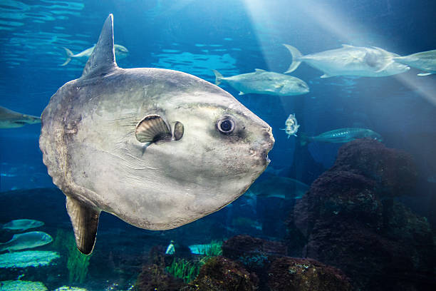
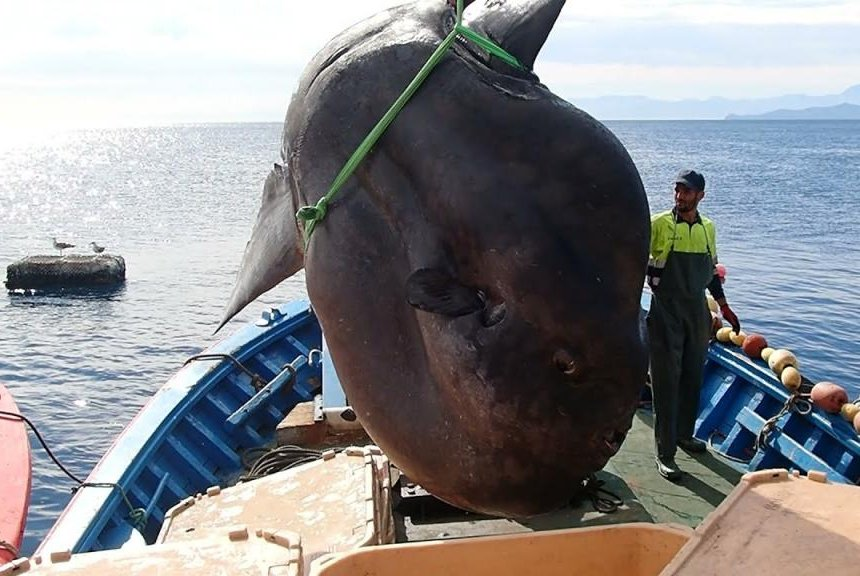

Ocean Sunfish

The ocean sunfish, Mola mola, or common mola, is one of the heaviest known bony fish in the world. Adults typically weigh between 247 and 1,000 kg (545–2,205 lb). The species is native to tropical and temperate waters around the globe. It resembles a fish head with a tail, and its main body is flattened laterally. Sunfish can be as tall as they are long when their dorsal and ventral fins are extended.

Their teeth are fused into a beak-like structure, and they are unable to fully close their relatively small mouths. Sunfish are generalist predators that consume largely small fishes, fish larvae, squid, and crustaceans. Sunfish can be found in temperate and tropical oceans around the world. They are frequently seen basking in the sun near the surface and are often mistaken for sharks when their huge dorsal fins emerge above the water.